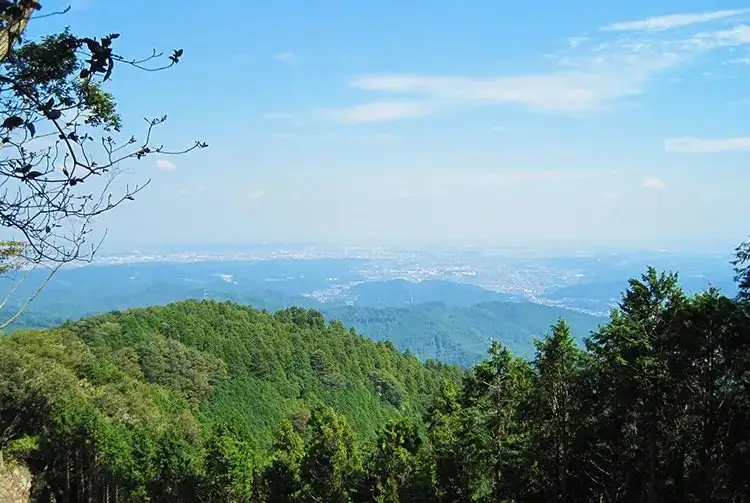

Akiruno, Tokyo: things to do, food and stays
Akiruno · Tokyo
Akiruno
Highlighted on the Tokyo map.

Sights
Dining
Men Dokoro Ishikawa
麺処 いし川

Noodle restaurant in Akiruno, Tokyo.
Kuro Chaya
黒茶屋

Japanese restaurant in Akiruno, Tokyo.
Ramen Gonokami Seiniku Ten
らーめん 五ノ神精肉店

Noodle restaurant in Akiruno, Tokyo.
La FOUGASSE
ラ・フーガス

Cafe in Akiruno, Tokyo.
Ikeya Seiniku Ten
池谷精肉店

Noodle restaurant in Akiruno, Tokyo.
Juan Chuzaemon
寿庵忠左衛門

Noodle restaurant in Akiruno, Tokyo.
Yagai Terrace Mizu no Ne
野外テラス 水の音

Cafe in Akiruno, Tokyo.
Shinshu Azumino Teuchi Soba Takase
信州安曇野手打蕎麦 たか瀬

Noodle restaurant in Akiruno, Tokyo.
Toutou An
燈々庵

Cafe in Akiruno, Tokyo.
Igusa
いぐさ

Noodle restaurant in Akiruno, Tokyo.
Ishibune Dining
石舟Dining

Noodle restaurant in Akiruno, Tokyo.
Fukagawa Rengatei Shiten
深川 煉瓦亭 支店

European restaurant in Akiruno, Tokyo.
Hoto Sagohei
ほうとう 佐五兵衛

Japanese restaurant in Akiruno, Tokyo.
Tonkin Tei Akiruno ten
東京亭 あきる野店

Noodle restaurant in Akiruno, Tokyo.
Daikichi Seimen
大吉製麺

Noodle restaurant in Akiruno, Tokyo.
Pan no Ie Aramodo
パンの家・あらもーど

Sweets and bakery shop in Akiruno, Tokyo.
Mitsubachi Farm Cafe
みつばちファームカフェ

Cafe in Akiruno, Tokyo.
Hanagaki
花がき

Noodle restaurant in Akiruno, Tokyo.
Kanmi Sabo Misegura Hisamori
甘味茶房 見世蔵 久森

Sweets and bakery shop in Akiruno, Tokyo.
Raku An
楽庵

Sweets and bakery shop in Akiruno, Tokyo.
Tea Room Mube
茶房むべ

Cafe in Akiruno, Tokyo.
Xiang
香

Noodle restaurant in Akiruno, Tokyo.
YOSHIZO

European restaurant in Akiruno, Tokyo.
L'Arbre

European restaurant in Akiruno, Tokyo.
cafe-dining Kan-KURA

Cafe in Akiruno, Tokyo.
Sabo Itoya
茶房 糸屋

Cafe in Akiruno, Tokyo.
Kiryuan
桐生庵

Noodle restaurant in Akiruno, Tokyo.
Yoshino
よしの

Noodle restaurant in Akiruno, Tokyo.
Akiru No Satoyama Sobadokoro Koharubiyori
あきる野さとやま 蕎麦処 小春日和

Noodle restaurant in Akiruno, Tokyo.
Hirano
ひらの

Noodle restaurant in Akiruno, Tokyo.
Taisho Ken
大勝軒

Noodle restaurant in Akiruno, Tokyo.
Yoshoku Kitchen Shion
洋食キッチン シオン

European restaurant in Akiruno, Tokyo.
Shogo Tei
初後亭

Noodle restaurant in Akiruno, Tokyo.
Kagaya
加賀屋

Noodle restaurant in Akiruno, Tokyo.
Yanagiya
柳屋

Noodle restaurant in Akiruno, Tokyo.
Do-mo factory blan.co

Cafe in Akiruno, Tokyo.
Stay
BO-SHA
紡舎｜BO-SHA

BO-SHA is a place to stay in Akiruno, Tokyo.